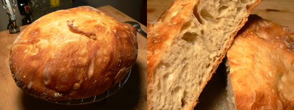

No-knead bread, part 2
No-knead bread, part 2
This no-knead bread is no joke! I seriously doubt I’ll make it many more times, despite its excellent results, because the timing is so complicated. Mixing the dough couldn’t be easier, but try calculating the proofing time. I suppose I could get in a rhythm and bake it twice a week. We’ll see.
Here is what the dough looked like in the Dutch oven, which had been sitting in a 450ºF oven for 30 minutes and was blazing hot. Prior to that, the dough had been between two well-floured kitchen towels for two hours.

Extracting the dough from the towels was kind of a disaster. Mark Bittman says to use enough flour to keep the dough from sticking—this means tons and tons of flour. This dough is so wet and hungry; it inhales flour. You can see how floury that towel is. It didn’t matter.
I got out as much dough as I could and threw it in the oven. Nearly an hour later, we have this ciabatta-looking bread, slipping easily out of the pot, with a nice hollow knock on the bottom. It’s really something to see such a beautiful loaf of bread come out of a Le Creuset pan.

The texture and flavor of the crust and crumb are much better than I expected. My bread doesn’t look at all like the one Jim Lahey made at his bakery, but I don’t care, because I think mine looks better! The directions in the video are slightly different than those below. Lahey says to put your oven to over 500ºF, while Mark only asks for 450º. I may have ended up with a thicker, crustier crust had I pumped up the oven, but I prefer soft things anyway.
No-Knead Bread
Adapted from Jim Lahey, Sullivan Street Bakery
Time: About 1½ hours plus 14 to 20 hours’ rising
Ingredients
3 cups all-purpose or bread flour, more for dusting
¼ teaspoon instant yeast
1¼ teaspoons salt
Cornmeal or wheat bran as needed
- In a large bowl combine flour, yeast and salt. Add 1 5/8 cups water, and stir until blended; dough will be shaggy and sticky. Cover bowl with plastic wrap. Let dough rest at least 12 hours, preferably about 18, at warm room temperature, about 70 degrees.
- Dough is ready when its surface is dotted with bubbles. Lightly flour a work surface and place dough on it; sprinkle it with a little more flour and fold it over on itself once or twice. Cover loosely with plastic wrap and let rest about 15 minutes.
- Using just enough flour to keep dough from sticking to work surface or to your fingers, gently and quickly shape dough into a ball. Generously coat a cotton towel (not terry cloth) with flour, wheat bran or cornmeal; put dough seam side down on towel and dust with more flour, bran or cornmeal. Cover with another cotton towel and let rise for about 2 hours. When it is ready, dough will be more than double in size and will not readily spring back when poked with a finger.
- At least a half-hour before dough is ready, heat oven to 450 degrees. Put a 6- to 8-quart heavy covered pot (cast iron, enamel, Pyrex or ceramic) in oven as it heats. When dough is ready, carefully remove pot from oven. Slide your hand under towel and turn dough over into pot, seam side up; it may look like a mess, but that is O.K. Shake pan once or twice if dough is unevenly distributed; it will straighten out as it bakes. Cover with lid and bake 30 minutes, then remove lid and bake another 15 to 30 minutes, until loaf is beautifully browned. Cool on a rack.
Yield: One 1½-pound loaf.
Comments
I didn’t have any problem releasing the bread from the towels. I used the wheat flour (which perhaps is not as easily absorbed?) to dust the bottom towel, and very little on top. I didn’t have any real non-terry cloth towels, so I used (clean, new) dust cloths from my friendly neighborhood 99cent store (yay, Astoria).
As far as I can tell, don’t worry that much about the timing. Even if you have to go 24 hours, it seems to be just fine.
I don’t think the timing is a proble, either. This is just about the most forgiving bread recipe I’ve ever found.
If you’d like to see some other examples ( from all over the US, Holland, and Israel, check it out on Toast-I’m adding links still.
Yes, I found 24 hours works. So if you start the bread about the time you want it maybe that solves the complicated timeing problem.
Love this bread.
So fun that you do it with your mom!
Your loaf looks lovely! I also made this bread this weekend (who didn’t? :) but didn’t have any problems, really, releasing it from the towel. Your dough looks quite goopy there, maybe your kitchen was warmer than mine? Who knows. Flour soaks up water in mysterious ways. Either way, looks like you had a great success!
made it 5 times in the past five days with incredible success. I baked the bread at 500, then reduced the heat to 450 once I took the cover off.
Each loaf has been perfect! I am about to try it substituting 1 cup of Rye Flour.
I’ve made this bread three times.
First time, I didn’t flour the towel (doh!) and was able to scrap enough out to get a decent loaf that turned out OK anyway.
Second time, I used rye flour instead of AP flour, and it was OK (but not great)
Third time, I floured down a counter, floured the top of the bread and the towel, folded it over, and got it into the towel. 2 hours later, it came out just fine.
I did make the mistake of putting into a 500 degree oven with the convection turned on…. when I lifted the lid off, it was that golden brown color, but another 15 minutes at convection heat browned the bread too much; it even stuck to the bottom of the pot.
Anyway, I think method 3 with the oven at a regular (no convection) 450 and it’ll be OK. That’s what I’m going to do for the batch I’m mixing up tonight.
where did you find instant yeast? i haven’t gone out to look for it yet, but i live in DUMBO where groceries are scarce…
Abby: FreshDirect has active instant yeast, which works fine if you dissolve it in a bit of warm water.
Steve: thanks for letting us know! I thought of trying the rye flour but now I probably won’t. Good luck with your next batch!
thanks, leland. i just read somewhere else that whole foods has it, too. i think i may stop by there on my way home from work if it’s not pouring — sometimes i just need instant gratification. plus i’m not a huge fresh direct fan — tI think heir quality has gone downhill…
I stopped by Whole Foods and this recipe must really be taking over New York City, because they were out of instant yeast! There was a sign on the shelf where it should have been, but it was all gone. Maybe FD is the way to go.
I am on my sixth loaf! I created a web page to document my methods – http://www.aresrocket.com/bread – the best bread I have ever made!
made one loaf already, it was pretty crusty and a little bit dark. I have another one ready to go in the oven soon, maybe I won’t go quite as long after I take the lid off.
This second loaf is half whole wheat, half white flour.
I just made the “no knead bread” recipe by Jim Lahey from the Sullivan Street Bakery. Yummy, yummy in my tummy! It was excellent! And as easy as pie, perhaps easier. Thanks for that recipe, whoever sent it, I think my daughter Rebecca. :-} I used the parchment paper, no problems
Cornmeal is the answer. Put it on cotton towels well-sprinkled with cornmeal and the problem is solved, plus it feels even more rustic and like it came from a bakery.
I found using a rubber spatual works great for getting the dough out of the pan and for rolling the dough on top of itself.
The dough does not stick to the spatual and I never touch the dough with my hands.
This is the third time that I have made this bread. After the first rising, there were hard bits of flour and water that had not been incorporated into the bread. Anyone else have this problem?
I just wallow the dough around in the bowl and let is rise and skip all the mess with the towel. Then scoop it all in the hot baking bowl. I have used a heavy cast iron dutch oven bought at WalMart in the camping section. I have used Correlle casserole with lid with good results but the best is an old Vision ware (the amber class) dutch oven is excellent for baking this bread. Look at yard sales for these.
Since instant yeast is more active than regular, if you don’t have instant yeast, you have 2 choices: up the yeast to 1/3 t, or allow extra rising time. Both adaptations will work. Heck, real bread can be made without any store bought yeast, by cultivating the natural yeasts in the air. Its called cultivating a starter.
Add a comment